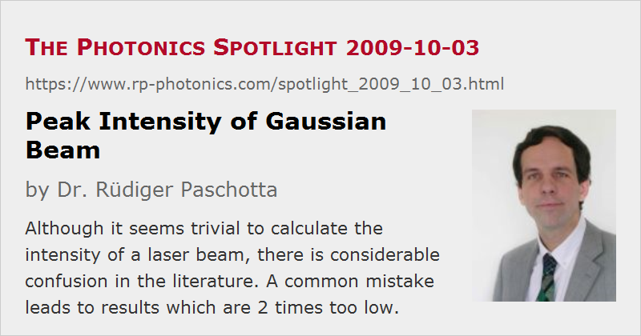

Peak Intensity of Gaussian Beam
Posted on 2009-10-03 as a part of the Photonics Spotlight (available as e-mail newsletter!)
Permanent link: https://www.rp-photonics.com/spotlight_2009_10_03.html
Author: Dr. Rüdiger Paschotta, RP Photonics Consulting GmbH
Abstract: Although it seems trivial to calculate the intensity of a laser beam, there is considerable confusion in the literature. A common mistake leads to results which are 2 times too low.

Ref.: encyclopedia articles on Gaussian beams and effective mode area
Isn't it easy: when a laser beam has the optical power P and the area A, its intensity is I = P / A. Not enough substance for an article in the Photonics Spotlight, you may think. I will demonstrate, however, that it is indeed worth to look at that, and you would be happy if others had done it.
The relation between intensity, power and beam area is trivial only for rectangular intensity profiles. More frequently, however, we are dealing with Gaussian beams. For arbitrary intensity profiles, one can define an effective mode area. One may then expect that the simple formula above remains valid when using that value for A. This is not true, however. For Gaussian beams, for example, the effective mode area is π w2 with the mode radius w, and the peak intensity (i.e., the intensity on the beam axis) is two times the power divided by the effective mode area. That factor 2 is often forgotten. Obviously, the same issue occurs in the context of the fluence (energy per area) of laser pulses.
Unfortunately, you cannot avoid the problem for yourself simply by always applying that factor. The trouble is that the scientific and technical literature is strongly contaminated with that error, and in most cases it is not even possible to find out whether or not that error has occurred.
As an example, consider specifications of an optical damage threshold, i.e., the maximum optical fluence which some device such as a dielectric mirror can tolerate. The usually measured parameters of the laser beam are the pulse energy and the mode radius. The peak intensity is not measured, but calculated from the other data. If those reporting results of their damage threshold measurements have not been aware of that factor 2, the quoted damage fluence is 2 times too low. (With a top-hat beam shape, for example, one could apply 2 times the energy to some area, compared with what would be expected from the wrong specification.) But if it is so, people are also not aware that such a detail has to be addressed, so you cannot even check whether or not that happened.
In my daily work, I encounter that problem quite frequently. Its consequence is that many literature values contain an uncertainty of a possibly missing factor 2. This is rather awkward in many cases. For example, when I have to design the laser resonator of a high-power Q-switched laser, I am not sure how large the mode areas on the mirrors have to be to avoid damage. Just staying far away from such limits is not always a solution, as this makes it more difficult to reach other design goals, such as a short resonator with low alignment sensitivity.
Of course, one can easily cause even more confusion, for example by specifying a "beam size", leaving it open whether a radius or a diameter is meant. That alone already makes for a factor of 4 in the intensities, if the specification is misunderstood.
Lay persons might be astonished to learn what level of sloppiness is common in science and technology. We would all profit from some more precision and care.
This article is a posting of the Photonics Spotlight, authored by Dr. Rüdiger Paschotta. You may link to this page and cite it, because its location is permanent. See also the RP Photonics Encyclopedia.
Note that you can also receive the articles in the form of a newsletter or with an RSS feed.
Questions and Comments from Users
Here you can submit questions and comments. As far as they get accepted by the author, they will appear above this paragraph together with the author’s answer. The author will decide on acceptance based on certain criteria. Essentially, the issue must be of sufficiently broad interest.
Please do not enter personal data here; we would otherwise delete it soon. (See also our privacy declaration.) If you wish to receive personal feedback or consultancy from the author, please contact him e.g. via e-mail.
By submitting the information, you give your consent to the potential publication of your inputs on our website according to our rules. (If you later retract your consent, we will delete those inputs.) As your inputs are first reviewed by the author, they may be published with some delay.
|  |
If you like this page, please share the link with your friends and colleagues, e.g. via social media:
These sharing buttons are implemented in a privacy-friendly way!